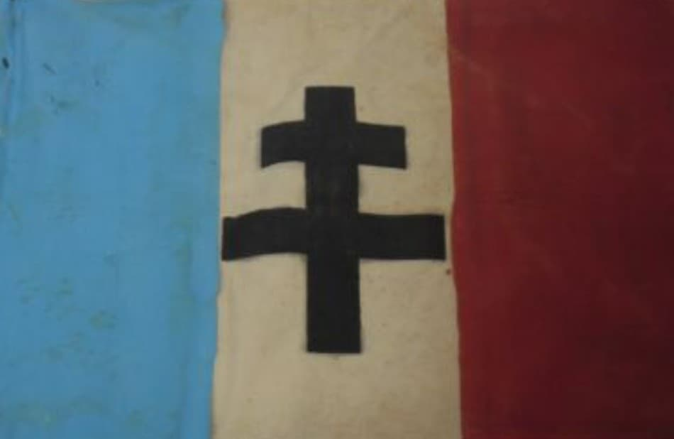
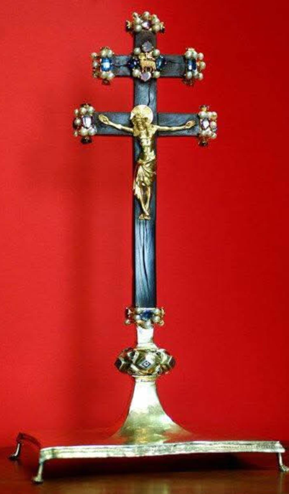
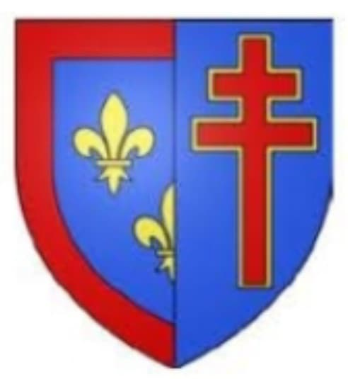
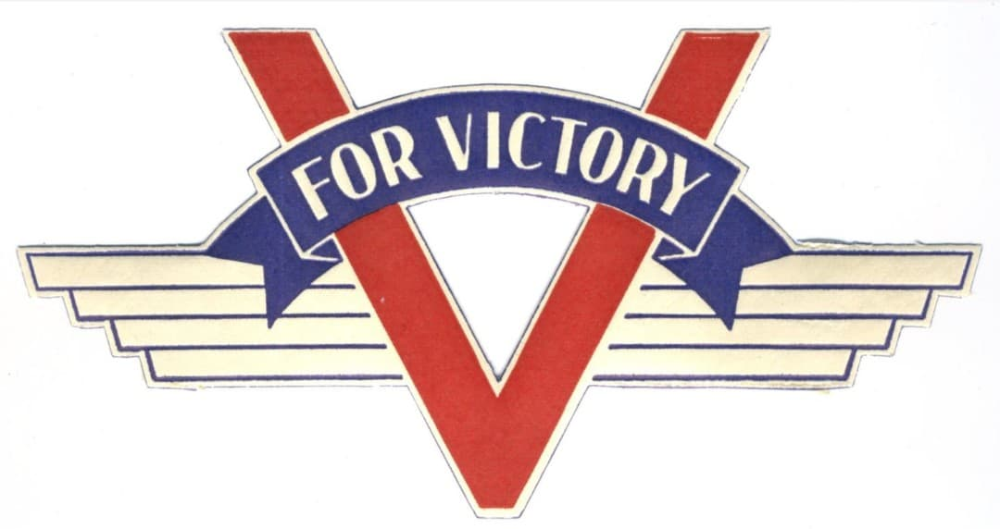

La croix de Lorraine n’est pas née en 1940 : elle est l’héritière directe d’un symbole médiéval, forgé autour d’une relique sacrée rapportée de Terre Sainte. Son histoire traverse les croisades, le duché de Lorraine, Jeanne d’Arc, les guerres de religion, puis la Résistance. En 1940, elle devient l’emblème de la France Libre, associée au célèbre V de la Victoire. Deux signes simples, puissants, capables de rallier un peuple entier.

La croix de Lorraine et le V de la Victoire sont les deux symboles majeurs de la France Libre. Adoptés en 1940, ils incarnent la résistance à l’occupation, l’espoir de la libération et la continuité historique d’une France qui refuse la défaite. Leur force réside dans leur simplicité : deux signes que l’on peut tracer partout, rapidement, clandestinement.

La croix de Lorraine descend de la croix d’Anjou, une croix à double traverse forgée autour d’un fragment du bois de la croix du Christ. Cette relique est rapportée de Terre Sainte par le chevalier Jean d’Alluye vers 1241.
La double barre représente :
Conservée par les ducs d’Anjou, la croix devient un symbole de foi, de légitimité et de protection divine. Elle est ensuite transmise à la maison de Lorraine, où elle acquiert une dimension politique et identitaire.

En Lorraine, la croix devient un emblème régional puissant. Elle est associée à Jeanne d’Arc, figure de libération nationale, née à Domrémy. Pour les Français, Jeanne incarne la résistance, la foi, la victoire contre l’occupation étrangère.
En 1940, de Gaulle comprend immédiatement la portée symbolique de ce lien : une France qui se relève, comme Jeanne délivrant le royaume.
En juillet 1940, le vice-amiral Émile Muselier propose la croix de Lorraine comme emblème officiel de la France Libre. De Gaulle accepte immédiatement, convaincu de sa force visuelle et historique.
La croix de Lorraine est l’antithèse parfaite de la croix gammée. Une croix française contre une croix nazie : un affrontement visuel et idéologique.
Issue de la croix d’Anjou, elle porte une dimension sacrée, royale et historique. Elle relie la France Libre à huit siècles d’histoire.
Elle renvoie à Jeanne d’Arc, symbole de libération et de résistance. Un message puissant pour 1940, où la France doit se relever.
Facile à peindre, visible de loin, impossible à confondre : la croix devient l’emblème des FNFL, des unités de la France Libre et de la Résistance intérieure.

En 1941, le “V for Victory” est lancé par la propagande allemande. Mais la Résistance retourne le symbole : V = Victoire, Vaincre, Vive la France Libre. Le V devient un signe de défi, un message d’espoir, un acte de courage.
Associé à la croix de Lorraine, il forme un duo graphique immédiatement reconnaissable, utilisé sur les murs, les tracts, les affiches clandestines.

Dans les villes occupées, la croix de Lorraine et le V deviennent des signes de ralliement clandestins. Tracés à la craie, gravés sur les portes, peints sur les murs, ils incarnent la défiance et l’espoir de la libération.
Pour les résistants, dessiner une croix de Lorraine ou un V, c’est affirmer que la France n’est pas morte. C’est un acte simple, mais dangereux, qui rappelle que la liberté commence parfois par un symbole.